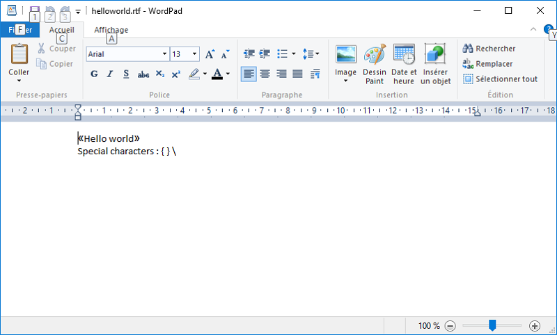

This article is the first of a series that will cover the RTF file format, and explain how you can use the RtfTools package classes to perform various kinds of RTF document processing.
The Rich Text Format (RTF) is a Microsoft proprietary file format, whose specifications were first published in 1987. It was originally intended to facilitate document interchange between different Microsoft products over different platforms, but gradually gained some form of popularity among software editors. The reason was simple : the Microsoft Word .DOC binary format specifications remained unpublished until 1997, where they became temporarily available under certain conditions (see https://en.wikipedia.org/wiki/Doc_(computing)).
This lack of transparency regarding the .DOC file format led software editors to see RTF as an alternative for supporting documents created with Microsoft Word and thus, to provide their end-users with better interoperability.
The RTF format evolved until its latest version 1.9.1 in March 2008 (see the Rtf 1.9.1 specifications).
And why caring about programming in Cobol, Fortran or RPG ? simply because there is an installed base of companies that still have to deal with it ! this is part of their history and, as a professional, you may have to deal with such environments.
Of course, chosing RTF as the preferred document interchange format across different platforms and/or systems would not be my preferred choice, unless I have to face with strong technical constraints coming from the IT environment, or from a strong company history, or both.
On the other hand, the RTF file format is really easy to parse and is human-readable (although in this particular case, "human-readability" may sometimes become a highly
subjective topic).
From a syntactic point of view at least, it is easy to read and it is easy to generate ; so, sometimes, it may be a good and cheap compromise...
Moreover, parsing Rtf documents does not require you to use a complex framework of C/C++/put your favorite language(s) here objects/libraries, as this is the case for PDF files. Creating an Rtf parser requires only a few dozen lines of code.
This series of articles focuses on the RTF document structure.
They will not explain how to create RTF contents such as headers, footers, tables and embedded images ; rather, they will focus on what you need to know if, one day, you have to read RTF documents and try to extract some useful information from them. They will also explain how the RtfTools package classes can be used to address some of your needs when it comes to processing Rtf files.
This first article will introduce you to the Rtf file format, providing you with the basic information you will need in order to understand an Rtf document when viewing it in a text editor, or when processing it through a script.
Maybe the simplest way to introduce the Rtf file format is to create the simplest possible document using the simplest word processing software, then have a look at the generated Rtf data. We have chosen the Microsoft Wordpad application for that. This small application, bundled with all versions of the Microsoft Windows operating system, has the great advantage of generating very simple Rtf output. Of course, it lacks many of the most common features that modern word processors offer, but it is ideal for our purpose.
The screenshot below shows a Wordpad document containing some very simple text, without any formatting :

(for those of you who are familiar with the Windows API, the Wordpad application uses the RichTextEdit control for all its operations)
We used a few characters that are definitely common, such as angle quotes, curly braces and backslashes. We will see later that such so common characters require some interpretation when translated into Rtf format ; but first, let's have a look at the Rtf file generated by Wordpad ; after saving the document and reopening it using some text editor such as Notepad or Notepad++, we will get the following output (the text coming from the original document above has been highlighted in red) :
{\rtf1\ansi\ansicpg1252\deff0\nouicompat\deflang1036{\fonttbl{\f0\fnil\fcharset0 Arial;}{\f1\fnil\fcharset0 Calibri;}}
{\*\generator Riched20 10.0.10586}\viewkind4\uc1
\pard\fs26\'ab\f1\fs22\lang12 Hello world\f0\fs26\lang1036\'bb\par
\f1\fs22\lang12 Special characters : \{ \} \\ \par
}
What could we say from the above ? at first glance, we can notice a few things :
There are other notions that cannot be simply deduced from the above data : for example, an Rtf document has a header part ; line breaks are completely optional ; and other specificities that this series of articles will explain in greater detail.
Rtf documents usually contain data encoded in 7-bits ASCII, consisting of groups, control words, control symbols and plain text. Line breaks (CRLFs) can be present in the document, but they have no other purpose than providing a better readability of the Rtf raw data : they will never be included in the document text.
The following sections describe the various components that can be found in an Rtf document ; they provide the official terms used in the Microsoft Rtf Specification, as well as their equivalent in the RtfTools package, where more detailed distinctions have been made for better clarity.
A control word can be regarded as an instruction that affects the way characters are displayed, or modifies the settings of a page, section or paragraph.
Control words can also define elements that can be later referred to from inside the document contents ; they include for example footnotes, which are not displayed
at the place they are defined in the Rtf document, but are rather generally referenced from within the document contents.
Such control words are called Destination control words in the Rtf specifications. The RtfTools package simply calls both forms as Control words.
A control word has the following syntax :
Examples :
A control word ends when a character that cannot be part of the control word itself has been encountered. Such characters are :
If the control word is followed by a space, then the space is considered to be part of the control word itself, not part of the document text contents. This may come from an effort to improve the readability of Rtf contents !
Note however that if a control word is followed by two or more spaces, then :
Control words can also be prefixed by the control symbol \*, such as in : \*\background. The Rtf specifications state that it is used for destination control words.
The basic purpose of such a construct is to tell an Rtf processor that it should ignore the control word if it does not recognize it (furthermore, the control word will not be included in the output if the Rtf processor is capable of writing back Rtf documents).
The RtfTools documentation refers to both Control words and Destination control words using the same term : Control words.
Groups start with with an opening brace ({) and end with a closing brace ((}). Inside a group, any paragraph or character-formatting properties can be specified, along with the document text they apply to. Grouping is also used for destination control words, such as fonts, styles, footnotes, headers and footers, etc.
Groups can be nested ; when applied to text formatting, you can think of them as a way to push the current section/paragraph/character formatting options onto a stack before temporarily modifying some local settings. The opening brace of a group will push such settings ; the contents of the nested group will define some specific settings, such as font weight, font size, text color ; then the closing brace will restore the settings that have been pushed when encountering the opening brace.
The following example will output the string "Hello " in bold, "gentle " as normal text, and "World !" in bold again (the \pard control word inside the nested group resets paragraph settings to their defaults) :
{\b Hello {\pard gentle } world !}
(the next article will describe the meaning of each space in the above Rtf contents - the ones being part of the control words, and the ones being part of the document text)
Control symbols, like control words, start with a backslash character, which is followed by a non-alphanumeric character. Unlike Control words, Control symbols are never followed by an optional space. If a space is present after a control symbol, it will be considered to be part of the document contents.
Although the Microsoft Rtf Specifications do not make any distinction between the various kinds of control symbols, the RtfTools package divides them into three categories, which are described below.
The basic syntactic elements of an Rtf file consist in only three characters : opening brace ({), closing brace (}) and backslash (\). With only these three characters, you should be able to parse any Rtf document (in the case of the backslash, of course, you will need some additional effort to parse what follows - a control word or a control symbol).
But what happens if you are using such characters in the document's contents ? the answer is simple : they need to be escaped. This process of escaping is handled automatically by your Rtf document processor (remember our example and the comments following in the Rtf by example paragraph ?).
Normally, you should find only the following escaped symbols in an Rtf document :
However, the RtfTools package will correctly handle escaped symbols where the character following the backslash is neither a quote (escaped characters) nor a control symbol character (see below).
An escaped character is presented with a backslash followed by an apostrophe (ASCII character 0x27) and two hexadecimal digits ; it allows for specifying an 8-bits character using the hexadecimal notation, such as in following example, which will map to the Euro character (€) in certain codepages :
\'80
A Control symbol (as the RtfTools package recognizes it) is neither an escaped expression nor an escaped character, which can be handled at a lexical analysis level.
Control symbols carry some extra meaning that is intended for Rtf viewer software ; they are therefore handled separately. You will find below a list of the currently recognized control symbols :
The Rtf specifications also include the \* control symbol, which is used to mark a destination control symbol whose text should be ignored if not understood by the RTF reader. The RtfTools package, however, considers that a sequence such as :
\*\background
is a control word ("background") with a special attribute saying that it is special, due to the presence of the \* control symbol just before it.
This article covered a part of the Rtf file format, introducing the basic notions that will allow you to become familiar with raw Rtf contents, at least from a syntactic point of view.
It also described the basic entities that form Rtf contents : control words, control symbols, groups and destinations, along with their counterparts in the RtfTools package.
The next article of this series will describe how an Rtf document is structured : header, body, fonts, styles, color tables and so on. It will also present some syntactic elements that were not discussed here and that may require some additional "intelligence" from a lexical parser. These include the handling of optional spaces after control words, and special control words such as the \bin or \pict, which require some specific processing.
You will find below some useful documents from Microsoft about the Rich Text Format :
And some useful links collected from elsewhere :